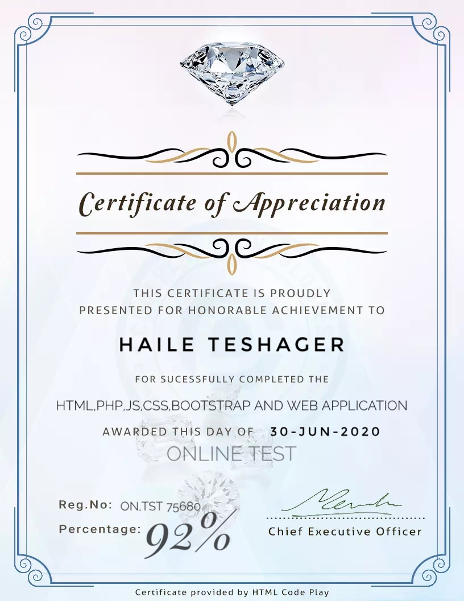

የዚህ መተግበሪያ(app) አላማ
ለደብሩ ወጣቶች እና ለምዕመናኑ ከታች በተጠቀሱት
አገልግሎቶች ቀለል ባለ የሶፍትዌር አማራጭ ማቅረብ
ነው።
❶ በሰ/ት/ቤቱ የተመረጡ መዝሙሮችን በግጥም ይገኛሉ።
❷ በቤተክርስቲያኗ የሚሰጡ ኮርሶች መፅሐፍት (handouts) እና ሌሎችም ትምህርታዊ መፀሐፍትን ይገኙበታል።
❸ በሰ/ት/ቤቱ የረቀቁ ህጎችን ይገኙበታል።
➍ በየቀኑ የሚፀለዩ የዘወትር ፀሎት ይገኝበታል።
❺ የቤተ-ክርስቲያኗን ስርአተ ቅዳሴ የህዝብ ተሰጥኦ መመለሻ መፀሃፍ ያገኙበታል
❻ የሰንበት ት/ቤቱ አጠቃላይ መረጃ ከአመሠራረቱ ጀምሮ ያለውን ማግኘት ይችላሉ።
❼ የሰንበት ት/ቤቱ ራዕይ ፤ ተልዕኮ እና ግቦች መመልከት ያስችላል።
➩developer of this app is
mesured by international code play▼

ሌሎች ስራዎች በዴቨሎፐሩ የተሰሩ
በዚህ የሞባይል አፕሊኬሽን ውስጥ የተካተቱት ጽሁፎች በዛ ካሉ ኦርቶዶክሳውያን መምህራን ካሳተሟቸው መጽሐፍት ቢሆንም በዋናነት እንደምንጭነት ያገለገሉን:-
፩.አምደ ሃይማኖት ብርሃኑ ጎበና ።
፪.ማኅበረ ቅዱሳን በተለያየ ጊዜ ካሳተማቸው ።
፫.ክብረ ቅዱሳንና ሌሎችም አቡነ ገብርኤል ።
፬.ኦርቶዶክስ መልስ አላት ዲ.ን ዳንኤል ክብረት።
.ፍኖተ ቅዱሳን ዲ.ን ያረጋል አበጋዝ።
እና ሌሎች መጽሃፍትን አንደ ምንጭነት ተጠቅመናል።
ሁሉንም በእግዚአብሔር ስም አናመሰግናለን።
ለተባበራችሁን ሀሉ እግዚአብሄር አብዝቶ ይባርካቹ።